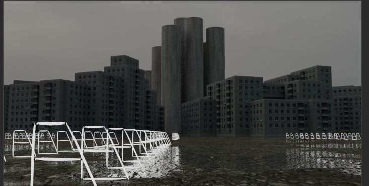
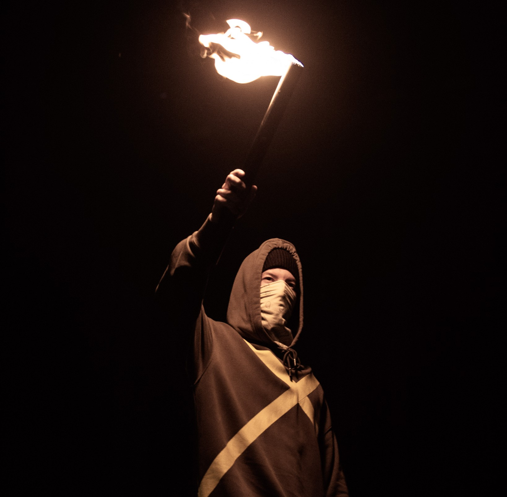
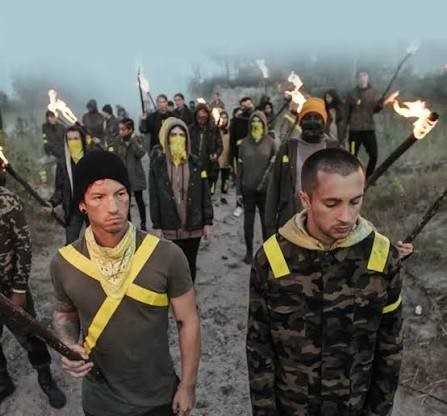

Tema
DEMA, el Vialism y la historia principal del lore.
Descripción
Esta sala recorre el universo de Trench: la ciudad de DEMA, en donde habita Clancy/Tyler, y la cual es gobernada por los nueve Bishops 'obispos', y el Vialism, la religión con la que mantienen cautivos a sus habitantes. Más allá de los muros de la ciudad se extiende Trench, el territorio al que hace referencia el título del álbum.
Aquí también conocerás a los Banditos, el grupo liderado por Josh/Torchbearer, quien lleva cinta amarilla (color que los obispos no pueden ver) sobre el pecho para proteger su corazón.
Todo el universo fue creado en la mente de Tyler Joseph, así que cada elemento funciona como metáfora de algo que él vive. La historia se cuenta desde su punto de vista.
Galería



